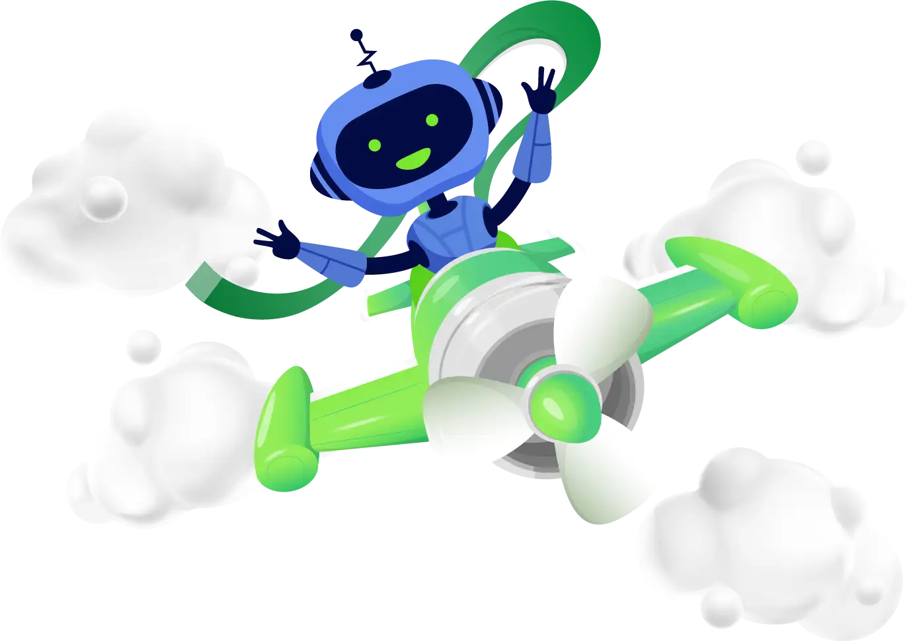

<section class="">
    <div class="flex columns-2 ml-10 mr-14 ">
        <div class="flex flex-col w-full items-start text-justify" style="margin-top: 30px;">
            <h1 class="text-60 font-weight-1100">
                ربات معامله گر فارکس
            </h1>
            <h2 class="text-40 font-weight-500">
                بر مبنای هوش مصنوعی
            </h2>
            <h6 class="w-80 font-weight-500">
                این ربات دستیار ترییدرهاست ؛ با قابلیت ترید خودکار که بر اساس الگوریتم هوش مصنوعی و ژنتیک کار می کنداین
                اکسپرت امکان مدیریت سرمایه،پارامترهای ورودی زیاد و نظارت انسانی دارد
            </h6>
            <div class="flex gap-3 mt-3 items-center">
                <button type="button" class="button-right rounded-full text-white font-medium
                focus-visible:outline focus-visible:outline-2 focus-visible:outline-offset-2
                  mx-1">
                    مقایسه پلن ها
                </button>
                <button type="button" class="button-left rounded-full text-white font-medium 
                          focus-visible:outline focus-visible:outline-2 focus-visible:outline-offset-2
                mx-1">
                    رضایت مشتری
                </button>
            </div>
        </div>
        <div class="flex-col w-full">
            
        </div>
    </div>
</section>